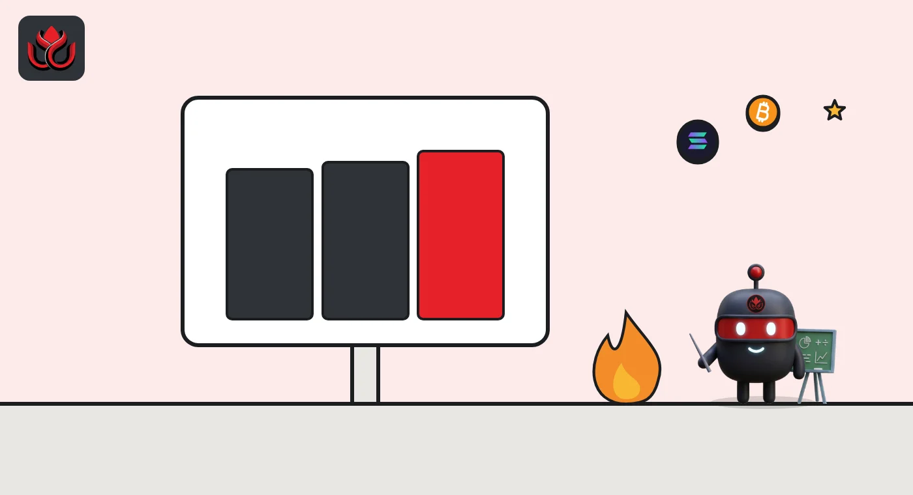
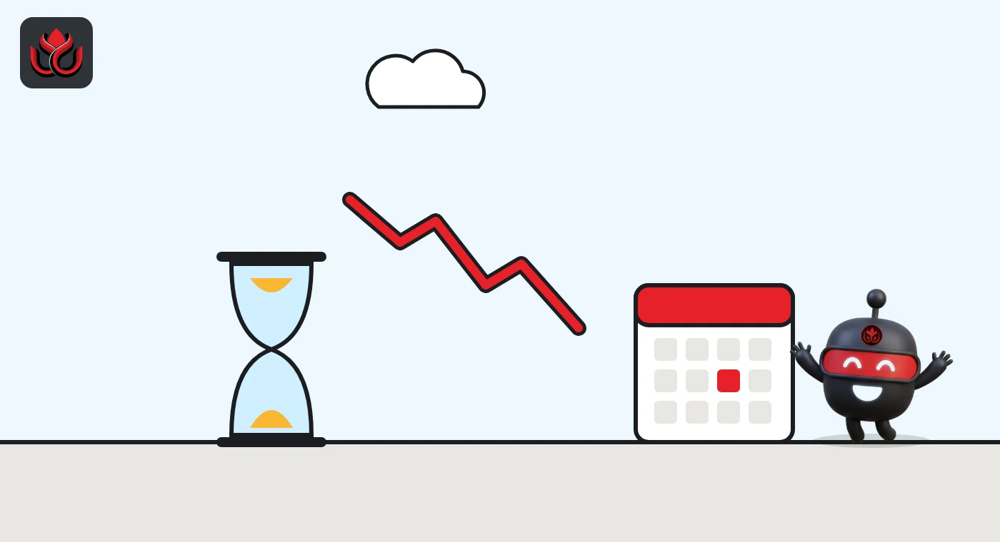

BNB just burned $1.2 billion of itself. Why is 100 million still years away?
The 37th quarterly auto-burn destroyed 1,646,196 BNB on October 19, the most coins of any burn this year. Supply is now 131.5 million BNB, still 31.5 million above the long-term target.
Key points
- BNB Chain burned 1,646,196.44 BNB, worth about $1.197 billion, in its 37th quarterly auto-burn on October 19, 2026.
- It is the largest of 2026's four burns by coin count, but not by dollars: January's 34th burn was worth about $1.277 billion.
- Total supply fell to 131,512,085 BNB. The goal is 100 million, so about 31.5 million BNB still has to go.
 What DeepSea's data shows
What DeepSea's data shows
The burn shrinks supply, but most BNB still sits where it trades. DeepSea's Binance page counts $33.64 billion of Binance's tracked holdings on BNB Chain. Over the past seven days, $368.29 million of BNB flowed into those wallets and $254.31 million flowed out.
Traders are not betting heavily on a rally. Among the perpetual futures traders DeepSea tracks, $2.57 million is short BNB against $1.43 million long, so its smart-trader bias reads short. Those positions are small next to BNB's size.
Data: DeepSea (desea.io), checked November 2, 2026, 7:58 a.m. ET.
What was burned
BNB Chain completed its 37th quarterly burn on October 19, 2026. According to the official burn post, 1,646,196.44 BNB were sent to a dead address, a wallet nobody controls, so the coins can never move again. BNB Chain put the value at about $1,197,344,519 around the time of the burn.
The figures were stated as of 6:05 a.m. ET. The burn ran directly on BNB Smart Chain (BSC), the network where BNB pays for transactions, and the post published the transaction ID so anyone can check it on a block explorer.
After the burn, total supply stood at 131,512,085 BNB, BNB Chain said.
The coins went to the address 0x000000000000000000000000000000000000dEaD, a standard burn address on BSC. The transaction hash, 0x179dbf2d...6493cd, is listed in the post. BNB Chain also links to a real-time tracker for the remaining amount to be burned. This was the 37th such quarterly burn since BNB Chain began the program; BNB's mainnet launched on April 18, 2019.
How the auto-burn works
BNB has two burn systems.
- The quarterly auto-burn. The amount is set by a formula based on BNB's price and how many blocks BSC produced in the quarter. BNB Chain says the aim is to shrink total supply to 100,000,000 BNB. It also says the mechanism runs on chain and is independent of the Binance exchange.
- The real-time burn (BEP-95). A share of the gas fees in every BSC block is burned as it is produced. Validator governance sets that share.
BNB Chain noted that its Lorentz and Maxwell upgrades made BSC produce blocks more often, so the formula's settings were adjusted to keep the same intent. The post does not publish the full formula. BSC has kept changing since: the Jenner hard fork now reserves part of every block for payments.

How it compares with 2026's other burns
The four burns of 2026 removed between 1.37 million and 1.65 million BNB each time, with the count rising every quarter. The dollar value moved differently, because it depends on BNB's price on the day.
- 34th burn, January 15: 1,371,803.77 BNB, about $1.277 billion (BNB Chain).
- 35th burn, April 15: 1,569,307.34 BNB, about $1.02 billion (BNB Chain).
- 36th burn, July 15: 1,615,827.80 BNB, about $931.7 million (BNB Chain).
- 37th burn, October 19: 1,646,196.44 BNB, about $1.197 billion.
Dividing value by coins, the October burn was priced near $727 per BNB, against roughly $577 in July and about $931 in January. That is our calculation from BNB Chain's own figures. So October was the biggest burn of the year in coins, while January's remains the biggest in dollars.
How far is 100 million?
Supply was 136,361,374.34 BNB after the January 15 burn, 134,786,916.53 BNB on April 15 and 133,166,127.91 BNB on July 15, according to BNB Chain. On October 19 it was 131,512,085 BNB. So supply fell by about 3.27 million BNB in six months.
The two quarterly burns in that period account for about 3.26 million BNB. The small remainder, roughly 12,800 BNB, fits the real-time gas burn. That split is our own arithmetic from the published supply figures.
The gap to the 100 million target is now about 31.5 million BNB. The formula changes with price and block counts, so there is no fixed end date.
BNB total supply after each 2026 burn
million BNB
Source: BNB Chain burn posts. Target: 100 million BNB.

Where BNB stands now
As of November 2, 2026, at 8 a.m. ET, CoinMarketCap showed BNB at about $703, down about 1.2% in 24 hours, with a market value of about $92.5 billion, the fourth largest crypto asset. It listed supply at about 131.51 million BNB, slightly below the post-burn figure as the real-time gas burn continues.
The price is lower than the roughly $727 implied at burn time. Ten days after the burn, Binance, the exchange most tied to BNB, suffered the theft of about $6.3 billion from its hot wallets, which LC Insight covered separately.
LC Insight analysis
This section is our reading of the facts above, not a statement of fact.
- We think the dollar headline flatters the burn. The coin count barely changed from July, so most of the jump to $1.2 billion came from a higher BNB price, and January's smaller coin burn was still worth more.
- At about 1.6 million BNB per quarter, the 100 million target looks roughly five years away. That is a rough estimate, because the formula shifts with price and block production.
- The real-time gas burn is small next to the quarterly burn, about 12,800 BNB in six months by our math. Supply depends mainly on the quarterly formula, which BNB Chain does not publish in full.
What's next
- The 38th quarterly burn, expected around January 2027 if the quarterly pattern holds.
- Whether BNB Chain publishes the adjusted auto-burn formula after the Lorentz and Maxwell changes.
- BNB's price after the Binance theft, which feeds into the next burn's size.
Disclaimer. This article is based on public information and the sources listed below as of the update time shown. It is for information only and is not investment, legal or tax advice. Figures may change as companies and authorities publish new data.